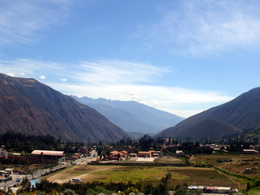
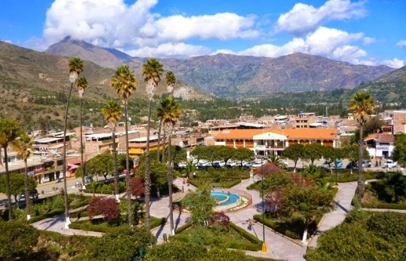
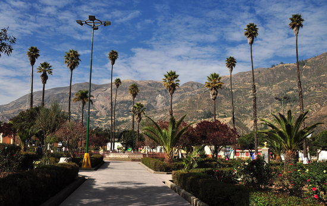
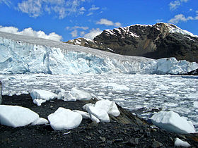

Los lugares mas Visitados
Chavín de Huántar
.jpg) El templo y fortaleza construido 800 años a.c., ofrece una única oportunidad de andar a través de un extenso laberinto compuesto por túneles y alcantarillas, herencia de la Cultura Chavín. Dicha cultura extendió su religión basada en una divinidad felina por todo el norte peruano. En 1985, la UNESCO otorgo a las ruinas la distinción de patrimonio mundial. Mas Información
El templo y fortaleza construido 800 años a.c., ofrece una única oportunidad de andar a través de un extenso laberinto compuesto por túneles y alcantarillas, herencia de la Cultura Chavín. Dicha cultura extendió su religión basada en una divinidad felina por todo el norte peruano. En 1985, la UNESCO otorgo a las ruinas la distinción de patrimonio mundial. Mas Información
Callejón de Huaylas

Este valle ubicado debajo de la Cordillera Blanca con pintorescos pueblos y ciudades ubicadas al norte de Huaraz, los cuales son punto de partida para realizar caminatas, ciclismo de montaña y alpinismo.Mas Información
Carhuaz
Localizado a 2,650 m.s.n.m. es el punto de partida para la ruta hacia el Valle de Ulta, destacando en la Cordillera Blanca. Otra caminata popular desde Huaraz incluye rutas hacia los baños termales a 7 Km. al este, cerca del pueblo de Hualcan.Mas Información
Yungay.jpg)
Un día de caminata hacia el mirador de Atma, el cual ofrece vistas panorámicas de las montañas Huascarán y Huandoy, así como también del valle santa. Es a partir de este lugar que se accede a la laguna de Yanganuco, uno de los más importantes destinos de la Cordillera Blanca y además área famosa para realizar caminatas. Se puede acceder también al circuito de Llanganuco hasta Santa Cruz lo que usualmente toma de 3 a 5 días.Mas Información
Caraz
A 2270 m.s.n.m., es uno de los pocos pueblos en el area que sobrevivieron a la completa devastación del terremoto de 1970 y conserva su original disposición y arquitectura coloniales españolas. Es usualmente base para las caminatas hacia el lado norte del Alpamayo, conocido por muchos como la montaña más bella del mundo.Mas Información
Valle del Pastoruri

Ofrece a visitantes un lugar para ver lagos, glaciares y la famosa planta Andina Puya Raimondi, planta bromeliácea más grande del mundo, que puede crecer hasta 12 metros de alto e increíbles cien años de vida. Mas Información
La laguna de Llanganuco.jpg)
Hermosas lagunas de aguas color turquesa, famosas en el Perú y el mundo, ubicadas a 84 kilómetros noreste de Huaraz, y 25 km de Yungay; en el Parque Nacional Huascarán. Este magnífico escenario natural se encuentra en un estrecho valle glaciar, entre los Nevados Huascarán (6 768 m) y Huandoy (pico sur 6,160 m).Mas Información